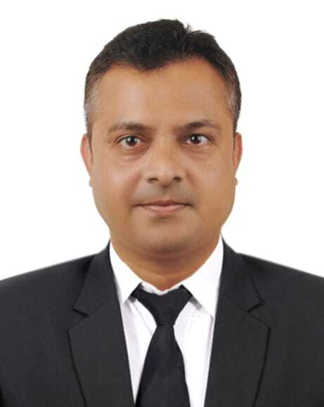

Md Atikul Hoque Prodhan
About Me
Cybercrime Investigator • Digital Forensics • Data Analyst • Law Enforcement
I am Md Atikul Hoque Prodhan, a Cybercrime Investigator with extensive experience in engineering and law enforcement. My journey began as a Lecturer at Dhaka International University, then as a Maintenance Engineer at Karnaphuli Fertilizer Company Ltd. (KAFCO, owned by Japan). Currently, I serve in the Bangladesh Police, specializing in cybercrime investigations and digital forensics, with advanced training at the FBI Academy in Virginia.
FBI National Academy Graduate • Executive MBA (IBA) • Masters of Police Science • BSc EEE (IUT)